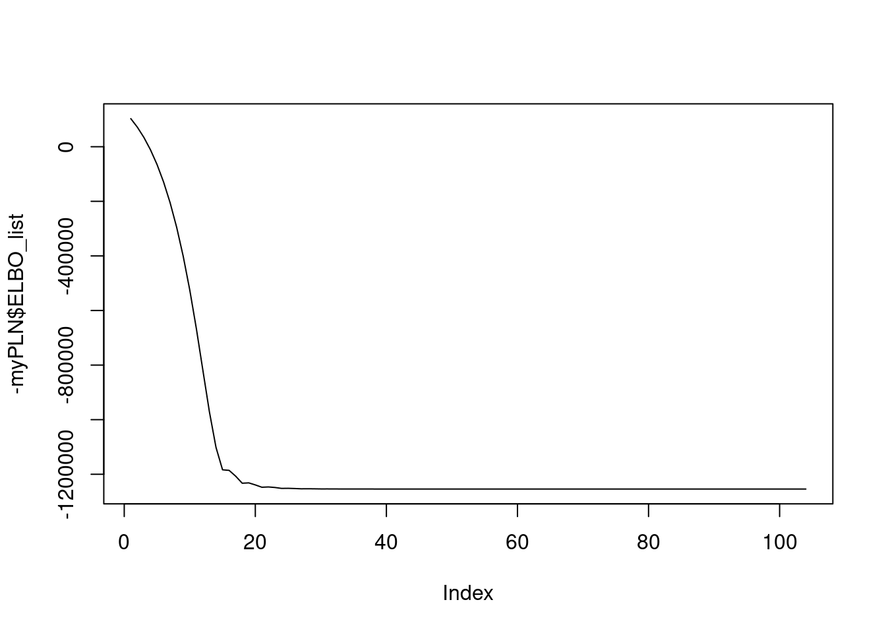

library(PLNmodels)This is packages 'PLNmodels' version 1.0.3Use future::plan(multicore/multisession) to speed up PLNPCA/PLNmixture/stability_selection.data(oaks)On charge le jeu de données oaks contenu dans PLNmodels
This is packages 'PLNmodels' version 1.0.3Use future::plan(multicore/multisession) to speed up PLNPCA/PLNmixture/stability_selection.Pour référence, on optimise avec le package dédié (qui utilise le backend NLOpt, une bilbiothèque C++ d’optimisation non linéaire. La variance CCSQA, utilisant les gradients explicites, est utilisée).
On définit une simple classe avec une routine d’optimisation utilisant Rprop et l’auto-differentiation sur le critère à optimiser (l’ELBO = Expected Lower BOund).
library(torch)
library(R6)
log_stirling <- function(n_){
n_ <- n_+ (n_==0)
torch_log(torch_sqrt(2*pi*n_)) + n_*log(n_/exp(1))
}
PLN <-
R6Class("PLN",
public = list(
Y = NULL,
O = NULL,
X = NULL,
n = NULL,
p = NULL,
d = NULL,
M = NULL,
S = NULL,
A = NULL,
B = NULL,
Sigma = NULL,
Omega = NULL,
loglik = NULL,
ELBO_list = NULL,
## Constructor
initialize = function(Y, O, X){
self$Y <- torch_tensor(Y)
self$O <- torch_tensor(O)
self$X <- torch_tensor(X)
self$n <- nrow(Y)
self$p <- ncol(Y)
self$d <- ncol(X)
## Variational parameters
self$M <- torch_zeros(self$n, self$p, requires_grad = TRUE)
self$S <- torch_ones(self$n , self$p, requires_grad = TRUE)
## Model parameters
self$B <- torch_full(c(self$d, self$p), -8.0, requires_grad = TRUE)
self$Sigma <- torch_eye(self$p)
self$Omega <- torch_eye(self$p)
## Monitoring
self$ELBO_list <- c()
},
get_Sigma = function(M, S){
1/self$n * (torch_mm(torch_t(M),M) + torch_diag(torch_sum(S**2, dim = 1)))
},
get_ELBO = function(B, M, S, Omega){
S2 <- torch_square(S)
XB <- torch_mm(self$X, B)
A <- torch_exp(self$O + M + XB + S2/2)
self$n/2 * torch_logdet(Omega) -
torch_sum(A - self$Y * (self$O + M + XB) - .5 * torch_log(S2))
},
get_loglik = function(B, M, S, Omega) {
S2 <- S**2
XB <- torch_mm(self$X, B)
A <- torch_exp(self$O + M + XB + S2/2)
J <- self$n/2 * torch_logdet(Omega) +
.5 * self$n * self$p - torch_sum(log_stirling(self$Y)) -
torch_sum(A - self$Y * (self$O + M + XB) - .5 * torch_log(S2)) -
.5 * torch_sum(torch_mm(M, Omega) * M + S2 * torch_diag(Omega))
J
},
fit = function(N_iter, lr, tol = 1e-8, verbose = FALSE){
self$ELBO_list <- double(length = N_iter)
optimizer <- optim_rprop(c(self$B, self$M, self$S), lr = lr)
objective0 <- Inf
for (i in 1:N_iter){
## reinitialize gradients
optimizer$zero_grad()
## compute current ELBO
loss <- - self$get_ELBO(self$B, self$M, self$S, self$Omega)
## backward propagation and optimization
loss$backward()
optimizer$step()
## update parameters with close form
self$Sigma <- self$get_Sigma(self$M, self$S)
self$Omega <- torch_inverse(self$Sigma)
objective <- -loss$item()
if(verbose && (i %% 50 == 0)){
pr('i : ', i )
pr('ELBO', objective)
}
self$ELBO_list[i] <- objective
if (abs(objective0 - objective)/abs(objective) < tol) {
self$ELBO_list <- self$ELBO_list[1:i]
break
} else {
objective0 <- objective
}
}
self$loglik <- self$get_loglik(self$B, self$M, self$S, self$Omega)
},
plotLogNegElbo = function(from = 10){
plot(log(-self$ELBO_list[from:length(self$ELBO_list) ]), type = "l")
}
)
)On crée une instance avec les données appropriées
Testons notre implémentation simple de PLN utilisant R-torch:
user system elapsed
1.757 0.665 1.384 
En fait, un backend torch est déjà disponible dans le package PLNmodels
system.time(myPLN_torch <- PLN(Abundance ~ 1 + offset(log(Offset)), data = oaks, control = PLN_param(backend = 'torch', config_optim = list(lr = 0.01))))
Initialization...
Adjusting a full covariance PLN model with torch optimizer
Post-treatments...
DONE! user system elapsed
2.731 0.542 1.731 Les vraisemblances finales sont comparables
[1] -32091.64[1] -32232.4torch_tensor
-31816.1191
[ CPUFloatType{1} ][ grad_fn = <SubBackward0> ]Ainsi que les paramètres